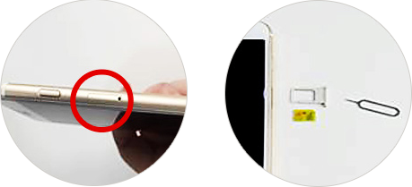

요금제&서비스
유심

유심안내
- 작은 칩 하나, 유심의 기적
- 쓰던 휴대폰을, 쓰던 번호 그대로 SK 7mobile 유심만 교체하시면 통신비가 절반 넘게 줄어드는 기적이 일어납니다.
- 5,390원 최저가
표준요금제 - 타사 11,000원 vs sk 7mobile 5,390원
- 기본료 50% 할인
- 싸게쓰는 USIM 13 / 싸게 쓰는 USIM 18
- 이통 3사 vs sk 7mobile 5,390원
- 쓰던 휴대폰, 번호
그대로 사용가능 - 약정위약금 제로
- USIM가입비 무료
(복지요금제외) - 고객센터 App으로
편리한 서비스
이런 분들께 추천합니다.
- 세컨폰을 사용하고
싶으신 분 - 약정이 끝나 저렴하게
사용하고 싶으신 분 - 해외직구로
구매하신 분 - 중고폰으로
사용하고자 하시는 분
유심이란?

가입자 식별칩으로 통신 서비스를 이용하기 위해 휴대폰에 꼭 끼워 사용해야 하며
일종의 모바일 신분증과 같은 개념으로 볼 수 있습니다.
마이크로 유심은 일반유심에서 분리하여 사용하시면 됩니다.
유심신청방법
-
- STEP 01
- 사용량에 맞는
요금제 선택
-
- STEP 02
- 온라인
or
전화신청
-
- STEP 03
- 신청 후
상담원 해피콜
-
- STEP 04
- 신청 후
빠른 배송
-
- STEP 05
- 휴대폰에 유심을
꽂으면 끝
유심이용안내
사용하실 휴대폰에 유심형태를 확인하고 동일한 유심을 선택하여 사용하셔야 합니다.
- 01. 배터리 분리형
- 휴대폰 뒷면 배터리 커버 분리 후 유심을 삽입하는 슬롯에 장착
-


- 02. 배터리 일체형
- 유심 분리용 핀을 이용하여 휴대폰 측면의 구멍을 눌러 유심 슬롯에 장착
-


※유심 장착 시 일련번호가 위로가게 넣어주세요
유심 자주하는 질문
- Q외산폰도 사용 가능한가요?
-
A
외산폰 역시 동일하게 사용 가능합니다. 단, 해외에서 구입한 블랙베리/노키아폰은 사용에 제한이 있을 수 있습니다.
외산폰의 경우 유심 장착 후 Data 사용을 위해 별도의 APN 설정 작업이 필요하다는 것을 기억해주세요~! [APN 설정방법 보러가기]
- Q유심 인식이 되지 않은 것 같습니다. 어떻게 해야 하죠?
-
A
내용
- QData와 MMS 수발신이 되지 않습니다.
-
A
내용